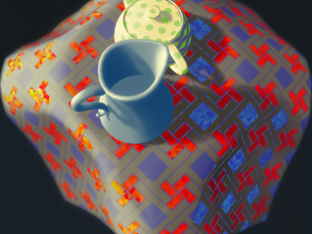
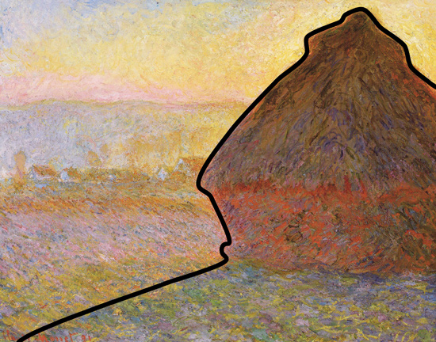
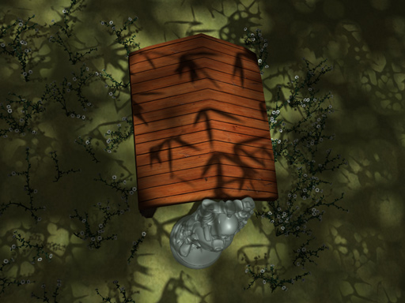

 |
Image Composition in Computer Rendering ph.D Dissertation, 2016 In the dissertation, I examine the concept of composition with computer-based rendering in various practical, theoretical and historical aspects. The dissertation is archived in the library of University of Victoria. A permanent link can be found here (http://hdl.handle.net/1828/7574) . A copy of the thesis can be found here . |
| Li Ji, Brian Wyvill, Lynda Gammon, Amy Gooch. 2016 Composition and Perception beyond Photorealism In Computational Aesthetics, The Eurographics Association, A. Forbes and L. Bartram, Eds. In this conference paper, we examine the concept, role and mechanism of image composition in the context of perception and photorealistic computer rendering. The paper starts with an example of Claude Monet's haystack painting. A copy of the paper can be found here . |
 |
 |
Li Ji, Amy Gooch, Lynda Gammon, Brian Wyvill. 2015 Rendering Artistic Light Patterns In Proceedings of the Workshop on Computational Aesthetics, The Eurographics Association. We demonstrate a novel light pattern rendering algorithm and show its capability in various settings, from a conventional rendering context to a public space installation. The algorithm focusses on exploiting the potential of projective light masks used for lighting composition. A copy of the paper can be found here . |